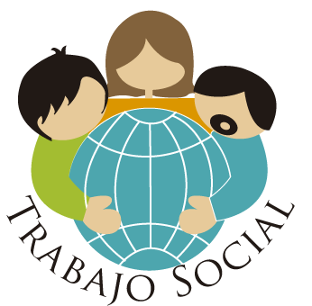

NOSOTROS
Que hacemos?.- Compartiendo experiencias en un grupo de personas que viven similar situación es posible aprender más de lo que uno pudiera imaginar: Mejorar incluso la más difícil situación, acompañados y con la experiencia de vida de cada uno como recurso para todos.
La ayuda mutua es intrínseca y natural a los seres humanos, porque somos seres sociales: Es natural reconocernos en otro cuando vemos que se encuentra en una situación similar a la nuestra. Somos seres fundamentalmente empáticos. Especialmente cuando se trata de algo difícil y que nos hace sufrir. El carácter fundamental del ser humano se expresa en nuestra capacidad de vincularnos e involucrarnos en relaciones de colaboración y ayuda recíproca. El inicio de una amistad tiene este carácter.